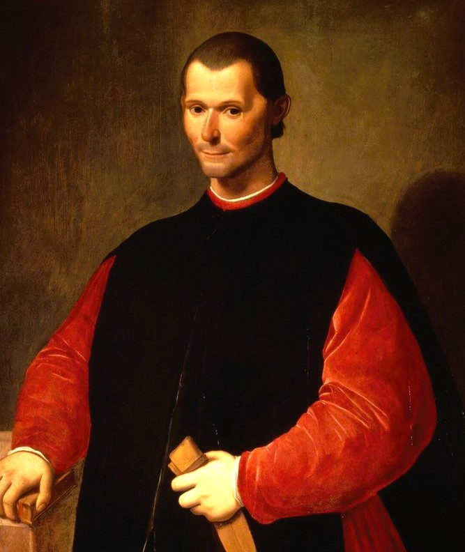

Who Was Niccolò Machiavelli?
Niccolò Machiavelli (1469–1527) was a Florentine diplomat, historian, political theorist, and writer whose work profoundly shaped the development of modern political thought. He is best known for The Prince, one of the most influential and controversial works in the history of political philosophy, as well as for the Discourses on Livy, his major study of republican government and political institutions.
Machiavelli is especially associated with a realist approach to politics. Rather than beginning with an ideal picture of how rulers ought morally to behave, he examined how political power actually operates under conditions of conflict, ambition, uncertainty, and changing circumstances. His writings drew both upon his diplomatic experience and upon his close study of ancient Roman history.
Machiavelli served the Florentine Republic for more than a decade as a senior official and diplomat. His work brought him into contact with major political figures and exposed him to the unstable politics of Renaissance Italy, a peninsula divided among rival states and repeatedly affected by foreign intervention. These experiences provided an important background for his reflections on power, military organization, political institutions, and the preservation of states.
After the Medici family returned to power in Florence in 1512, Machiavelli lost his government position and was later imprisoned and tortured on suspicion of involvement in a conspiracy. Following his release, he spent much of his time away from political office and devoted himself to writing. During this period he composed The Prince and began the Discourses on Livy, along with works on history, war, and drama.
Machiavelli's reputation has often been reduced to the adjective "Machiavellian," commonly associated with manipulation, deception, and ruthless ambition. His actual philosophy, however, is more complex than this popular image suggests. Alongside his analysis of princely power, Machiavelli offered an influential defense of republican institutions, civic participation, political liberty, and the productive role that conflict can sometimes play within a free political order.
Niccolò Machiavelli: Quick Facts
- Name — Niccolò Machiavelli
- Period — 1469–1527
- Born in — Florence, Italy
- Philosophical period — Renaissance political philosophy
- Associated with — Political realism and republicanism
- Known for — The Prince and the Discourses on Livy
- Career — Senior diplomat of the Florentine Republic
- Major works — The Prince, Discourses on Livy, The Art of War
- Key concepts — Virtù, fortuna, and political realism
- Historical importance — Widely regarded as a founder of modern political science
Machiavelli and Renaissance Florence

Machiavelli lived during the Italian Renaissance, a period of extraordinary artistic and intellectual achievement but also intense political instability. The Italian peninsula was divided among competing powers, including Florence, Venice, Milan, Naples, and the Papal States. Their rivalries created shifting alliances and frequent conflicts that weakened Italy against intervention by foreign powers.
The French invasion of Italy in 1494 dramatically revealed this political vulnerability. France, Spain, and the Holy Roman Empire became deeply involved in Italian affairs, while the independent Italian states struggled to defend their territories and political autonomy. Machiavelli witnessed this wider crisis throughout his diplomatic career and repeatedly reflected on Italy's political weakness and military dependence.
Florence itself underwent major political transformations during Machiavelli's lifetime. The Medici family was expelled in 1494, and a republican government emerged amid the religious and political influence of Girolamo Savonarola. After Savonarola's execution in 1498, the Republic continued under changing political arrangements, providing the government Machiavelli would soon serve.
The Medici returned to Florence in 1512 with foreign military support, bringing the republican government to an end and abruptly changing Machiavelli's political position. These repeated changes taught him that states could rise or collapse through a combination of internal conflict, military strength, leadership, institutions, and unexpected historical circumstances.
Machiavelli's political philosophy cannot be separated from this unstable environment. His writings were shaped by direct experience of diplomacy, war, republican government, foreign invasion, and political collapse. Renaissance Florence therefore provided not merely the setting for his life, but much of the historical material from which his distinctive analysis of power and political order developed.
Machiavelli's Early Life and Diplomatic Career
Niccolò Machiavelli was born in Florence in 1469 into a family of modest financial means but established social and intellectual connections. Relatively little is known with certainty about his early education, although his writings demonstrate a strong humanist formation and extensive familiarity with Latin literature, Roman history, rhetoric, and political thought.
Classical history became particularly important to Machiavelli's intellectual development. He studied ancient writers not simply as literary authorities but as sources of political experience. The Roman historian Livy was especially significant, later providing the central historical framework for Machiavelli's Discourses on Livy.
In 1498, Machiavelli entered public service as an official of the Florentine Republic. He became Second Chancellor and also served as secretary to the magistracy responsible for war and foreign affairs. These positions placed him close to the practical administration of a republic during a period of military and diplomatic uncertainty.
Over the following fourteen years, Machiavelli undertook numerous diplomatic missions within Italy and abroad. He traveled to the French court, dealt with Italian rulers, and later observed political developments connected with the Holy Roman Empire. His work required negotiation, reporting, analysis, and close attention to changing political circumstances.
Machiavelli's encounters with powerful political figures, including Cesare Borgia, became especially important to his later writings. These experiences gave him material for analyzing leadership, military power, political calculation, and the difficulties of governing unstable states. His political philosophy therefore emerged partly from scholarship, but also from unusually extensive experience inside Renaissance government and diplomacy.
Machiavelli's Exile, Imprisonment, and Retirement
Machiavelli's political career ended abruptly when the Medici family returned to power in Florence in 1512. Because he had served the republican government for fourteen years, he was removed from public office and excluded from the political life to which he had devoted much of his adult career.
In 1513, Machiavelli was implicated in a conspiracy against the Medici government. He was arrested, imprisoned, and subjected to torture before eventually being released following a general amnesty connected with the election of Giovanni de' Medici as Pope Leo X. Although released, he remained politically marginalized for a considerable period.
Machiavelli then spent much of his time at his family's property at Sant'Andrea in Percussina, outside Florence. His exclusion from office was personally painful, but it created the circumstances in which he turned more intensively toward writing, historical study, and reflection on the political experiences of his earlier career.
During these years, Machiavelli composed The Prince and began the long process of writing the Discourses on Livy. He also produced works on military organization, history, literature, and drama. His period away from government was therefore not intellectual retirement in a passive sense, but one of the most productive periods of his life.
Machiavelli dedicated The Prince to Lorenzo de' Medici, and the work is commonly understood partly as an attempt to demonstrate his political expertise and regain public employment. He later received some commissions from the Medici government, including work on the Florentine Histories, but he never recovered the same central political position he had held under the Republic.
What Did Machiavelli Believe?
Machiavelli's political thought begins with a determination to examine political life as it actually operates. He was deeply skeptical of theories that described only ideal rulers or perfectly just political orders while ignoring conflict, ambition, fear, military force, and the instability that characterize real political life.
This approach is often described as political realism. Machiavelli asks what enables a ruler, republic, or state to survive under difficult circumstances. He therefore studies the effective use of power through historical examples and political observation rather than treating conventional moral ideals as sufficient guides to successful government.
Machiavelli does not, however, simply teach that rulers should be cruel or dishonest whenever possible. His arguments are usually concerned with particular political circumstances and with the preservation of political order. He examines when force, deception, severity, flexibility, or restraint may be politically effective, often emphasizing the dangerous consequences of poor judgment.
His political philosophy also contains a strong republican dimension. In the Discourses on Livy, Machiavelli analyzes civic liberty, political institutions, popular participation, and the preservation of free republics. He often argues that properly structured political conflict can help protect liberty rather than simply destroy it.
Machiavelli's writings therefore resist a simple classification. The Prince investigates the problems faced by rulers, especially in unstable or newly acquired states, while the Discourses develops an extensive analysis of republican government. Together, his works transformed political thought by making power, conflict, institutions, and historical circumstance central objects of philosophical investigation.
The Prince: Machiavelli's Most Famous Work

The Prince is Machiavelli's best-known work and one of the most controversial books in political thought. Written in 1513 during his exclusion from Florentine office, it examines how rulers acquire, maintain, and secure political power under conditions of uncertainty, conflict, and changing historical circumstances.
The work analyzes different kinds of principalities and the different problems they present. Machiavelli considers hereditary and newly acquired states, the role of military القوة, the dangers of relying on mercenaries, and the difficulties of governing territories with different political traditions and institutions.
Machiavelli supports his arguments with examples from ancient history and contemporary politics. Rather than constructing a purely abstract theory, he repeatedly asks why particular rulers succeeded or failed. This use of historical comparison gives the work its distinctive practical and analytical character.
The book became notorious because Machiavelli openly discusses deception, force, fear, cruelty, and political image. He argues that rulers cannot always act according to conventional moral expectations if they are to preserve political order. Yet he also warns that unnecessary cruelty, hatred, instability, and poor political judgment can destroy a ruler's position.
The Prince was published only after Machiavelli's death, in 1532, but it quickly became one of the most discussed works in European political thought. Its meaning remains contested: some read it primarily as a realist analysis of power, while others emphasize its relationship to Machiavelli's republican commitments and the broader political crisis of Renaissance Italy.
Why Did Machiavelli Write The Prince?
Machiavelli wrote The Prince after losing his position in the Florentine Republic and being excluded from political office. His letters from this period reveal how strongly he missed public service, making it reasonable to understand the work partly as an attempt to demonstrate the practical value of his political knowledge.
The book was dedicated to Lorenzo de' Medici, the ruler of Florence. By presenting his analysis of government and statecraft to the Medici, Machiavelli may have hoped to regain their confidence and secure a return to political employment. The work therefore had an immediate personal and political context.
Yet The Prince cannot be reduced simply to a job application. It also gathers lessons Machiavelli believed he had learned through diplomacy, historical study, and observation of political failure. The treatise attempts to identify recurring problems that confront rulers and to explain why apparently successful strategies can fail.
The political crisis of Italy also forms an important background to the work. In its final chapter, Machiavelli appeals for the liberation of Italy from foreign domination and expresses hope for political renewal. This broader concern connects his analysis of princely power with his long-standing anxiety about Italian military and political weakness.
The Prince therefore emerged from several motivations at once: personal exclusion from public office, intellectual reflection on political experience, and concern for the future of Italy. Its remarkable originality lies partly in the way Machiavelli transformed these immediate historical circumstances into a broader investigation of power, leadership, fortune, and political survival.
Is It Better to Be Feared or Loved? Machiavelli's Famous Question
One of the most famous questions in The Prince concerns whether a ruler is better served by being loved or feared. Machiavelli approaches the issue as a problem of political reliability rather than as a simple moral choice, asking which form of loyalty is more likely to endure when political circumstances become dangerous.
Machiavelli argues that the ideal situation would be for a ruler to be both loved and feared. Because this combination is difficult to maintain, however, he concludes that fear is safer when a ruler must choose between the two. His argument rests on his skeptical view of the reliability of human loyalty under pressure.
Fear, however, must not become hatred. Machiavelli repeatedly warns that a ruler who makes himself hated creates powerful motives for conspiracy and rebellion. Political severity must therefore be distinguished from uncontrolled cruelty or behavior that unnecessarily humiliates and alienates the population.
His discussion is consequently more complex than the popular slogan suggests. Machiavelli does not simply recommend terror as the best form of government. He is concerned with the political consequences of different methods of rule and argues that authority becomes fragile when a ruler loses the ability to control hostility and resentment.
The passage illustrates Machiavelli's broader political method. Instead of asking which form of rule appears morally attractive in theory, he investigates how human beings often behave in actual political situations. His answer therefore reflects his concern with security, obedience, reputation, and the practical preservation of political power.
What Does "Machiavellian" Mean?
The adjective "Machiavellian" is commonly used to describe cunning, manipulation, deception, and ruthless pursuit of power. This popular meaning developed from the extraordinary reputation of The Prince, which was often treated by its critics as a handbook for immoral or unscrupulous political conduct.
The modern use of the word, however, captures only part of Machiavelli's thought. His writings certainly examine deception, strategic calculation, force, and political manipulation with unusual frankness, but they also investigate republican liberty, law, civic institutions, military organization, and the conditions required for political stability.
Machiavelli's recommendations are also usually tied to particular political circumstances rather than presented as universal rules for ordinary personal behavior. His central question is often what action will preserve or strengthen a political order in a dangerous situation, not whether manipulation should become a general principle of everyday life.
His reputation was further shaped by centuries of hostile criticism. Religious and political opponents frequently portrayed Machiavelli as a defender of evil or corruption, while later writers turned his name into a symbol for cynical political behavior. These interpretations helped create the lasting cultural meaning of "Machiavellian."
A fuller reading of Machiavelli therefore reveals a more complicated thinker than the adjective suggests. He was interested not merely in how individuals manipulate others, but in the relationship between power, institutions, conflict, leadership, liberty, and historical circumstance. His popular reputation remains important, but it should not replace his actual political philosophy.
Virtù in Machiavelli's Philosophy
Virtù is one of the most important and difficult concepts in Machiavelli's philosophy. Although related to the Italian word for virtue, it does not simply mean conventional moral goodness. Its meaning changes with context and can include political skill, courage, intelligence, strength, decisiveness, and the capacity for effective action.
A person possessing virtù is able to understand changing circumstances and respond effectively to them. Machiavelli admires leaders who are energetic, adaptable, and capable of acting when opportunities arise. Virtù therefore represents an active capacity rather than a fixed collection of traditional moral virtues.
The concept is closely connected with Machiavelli's analysis of political leadership. A ruler may inherit favorable circumstances, but long-term success often depends on the ability to organize power, recognize danger, build institutions, and alter one's methods when the political environment changes.
Virtù is frequently contrasted with fortuna, the unpredictable element of chance and circumstance. Human beings cannot control everything that happens to them, but Machiavelli rejects the idea that they are simply helpless before fate. Political preparation and energetic action can limit the destructive effects of changing fortune.
Virtù should therefore not be translated simply as "ruthlessness." Machiavelli's concept is broader and more complex, referring to the qualities required to act effectively within an unstable political world. It expresses his belief that successful political action requires both understanding circumstances and possessing the courage to respond to them decisively.
Fortuna: Machiavelli on Chance and Fate
Fortuna refers to the unpredictable role of chance, circumstance, and historical change in human affairs. Machiavelli rejects the belief that political success results entirely from human planning. Even capable rulers can encounter wars, crises, betrayals, natural disasters, and sudden changes that lie beyond their control.
At the same time, Machiavelli does not regard fortune as an absolute power that completely determines human life. In The Prince, he argues that human beings retain significant opportunities for action. Political success depends partly on fortune, but preparation, judgment, courage, and adaptability can influence how people respond to events they did not create.
Machiavelli famously compares fortune to a destructive river that can overflow and devastate the surrounding land. The metaphor emphasizes that human beings cannot always prevent extraordinary events, but they can prepare defenses before disaster occurs. Wise political action therefore includes preparation for dangers that cannot be predicted with complete certainty.
The relationship between fortuna and virtù is central to Machiavelli's understanding of political life. Fortuna creates opportunities and dangers, while virtù concerns the human capacity to recognize and respond to them. Success often depends on whether a leader's methods are suited to the circumstances of a particular historical moment.
Machiavelli's theory of fortune therefore rejects both complete determinism and complete human control. Political actors must accept uncertainty while still preparing for action. This tension between unpredictable circumstances and human agency gives his political philosophy much of its enduring realism.
Do the Ends Justify the Means? Machiavelli's Real View
The phrase "the ends justify the means" is commonly associated with Machiavelli, but he did not use these exact words as a general philosophical principle. The phrase is therefore an oversimplification of his political thought and can easily create the mistaken impression that he believed any action was acceptable if it produced a desired result.
Machiavelli does argue that political leaders sometimes face situations in which conventional moral behavior may conflict with the survival of a state. In The Prince, he examines force, deception, and severity as possible instruments of political action, particularly when rulers confront serious threats to their authority or political order.
His concern is largely with political effectiveness and consequences. A ruler must consider whether an action strengthens or weakens the state, creates security or instability, and produces obedience or hatred. Machiavelli's analysis therefore shifts attention from moral intention alone toward the practical consequences of political action.
This does not mean that Machiavelli consistently approves of unlimited violence or cruelty. He often distinguishes politically useful action from actions that generate hatred, disorder, revenge, and long-term instability. A ruler who acts brutally without judgment may therefore fail according to Machiavelli's own standards of political success.
The better interpretation is that Machiavelli challenges the belief that politics can always be governed by conventional moral rules without regard to circumstances. His philosophy raises a difficult question: what should political leaders do when moral ideals and political necessity appear to conflict? That question remains central to debates about political realism and the ethics of power.
Machiavelli on Human Nature
Machiavelli frequently presents a skeptical view of human behavior. In his political writings, people often appear self-interested, ambitious, fearful, and willing to change their loyalties when circumstances change. Political leaders who rely entirely on personal goodwill therefore risk serious disappointment.
This view should not necessarily be understood as a systematic theory claiming that every human being is always selfish or corrupt. Machiavelli is primarily interested in recurring political tendencies that institutions and leaders must take seriously. His arguments often focus on how people behave when wealth, security, power, and survival are at stake.
Because human motivations are unstable, Machiavelli places great importance on political institutions. A well-designed republic should not depend entirely on the exceptional virtue of individual leaders. Laws and institutions can organize competing ambitions and reduce the damage caused when powerful groups attempt to dominate one another.
His Discourses on Livy consequently offer a more complex picture than simple pessimism. Machiavelli often expresses confidence in the political judgment of the people and argues that citizens can defend liberty when institutions allow them a meaningful role in public political life.
Machiavelli's realism about human nature therefore supports both his analysis of powerful rulers and his interest in republican government. Since individuals cannot always be expected to behave perfectly, political orders must be designed with real human motives in mind. Good institutions, rather than moral optimism alone, are essential to the preservation of liberty and political stability.
Machiavelli on Religion and the Church
Machiavelli's writings treat religion primarily through its political and civic effects. He recognizes that shared religious beliefs can strengthen social unity, encourage public discipline, and provide a moral framework capable of supporting laws and political institutions.
His admiration for the Roman Republic influenced this perspective. In the Discourses on Livy, Machiavelli argues that Roman religious practices contributed to civic order and political unity. He was therefore interested in religion not only as private belief but also as a force capable of shaping collective political behavior.
Machiavelli was nevertheless highly critical of the institutional Church of his own time. He believed that papal political power and corruption had contributed to Italy's political weakness and fragmentation. His criticism was directed especially toward the political consequences of the Church's position within the divided Italian peninsula.
His attitude toward Christianity is more difficult to summarize. Machiavelli sometimes contrasts what he regarded as the civic and martial virtues of ancient Rome with forms of Christianity that he believed encouraged humility and otherworldliness at the expense of active public life. These arguments have remained controversial among scholars and require careful interpretation.
Machiavelli's discussion of religion is historically significant because it examines religious institutions partly in terms of their social and political consequences. Rather than making theology the foundation of his political theory, he asks how religious beliefs influence civic life, authority, military courage, law, and the stability of political communities.
The Lion and the Fox: Machiavelli on Cunning and Force
Machiavelli's famous image of the lion and the fox appears in The Prince as part of his discussion of political conduct and the difficult relationship between law, force, and deception. The lion represents strength and the ability to confront open threats, while the fox represents cunning and the ability to recognize traps, schemes, and dangers that cannot be overcome by force alone.
Neither quality is sufficient by itself. A ruler who relies only on force may be powerful enough to intimidate enemies but can still be deceived, manipulated, or drawn into situations that strength alone cannot solve. Conversely, a ruler who depends entirely on cleverness may recognize dangers but lack the power necessary to defend the state when conflict becomes open and unavoidable.
The metaphor therefore expresses Machiavelli's broader emphasis on political adaptability. Circumstances change, allies become unreliable, enemies employ deception, and political problems do not always yield to the same method. Effective political judgment requires recognizing the nature of a particular situation and being prepared to change one's method rather than following a rigid rule.
Machiavelli connects the image to his distinction between fighting through laws and fighting through force. Human beings ideally resolve disputes through laws and institutions, but political life can sometimes involve circumstances in which legal methods alone do not protect a ruler or a state. The lion and the fox consequently symbolize two different forms of political action that Machiavelli believes a successful ruler may need to understand.
The metaphor should not, however, be reduced to the simple advice that rulers should always deceive and use violence. Its deeper significance lies in Machiavelli's rejection of political inflexibility. He is interested in whether leaders possess the practical intelligence to recognize changing circumstances, understand different kinds of threats, and employ appropriate means without becoming prisoners of a single idealized model of political behavior.
Machiavelli on Cruelty, Mercy, and Well-Used Violence
Machiavelli's discussion of cruelty and mercy is one of the most controversial parts of his political philosophy. In The Prince, he asks whether a ruler's reputation for mercy may sometimes produce worse political consequences than a limited use of severity. His argument is not that cruelty becomes morally good, but that political actions must also be judged by their consequences for public order, security, and the wider population.
Machiavelli famously distinguishes between cruelty that is, in his difficult formulation, "well used" and cruelty that is badly used. Measures of severity are described as well used when they are connected to an immediate political necessity, carried out in a limited and decisive manner, and not continually repeated. Cruelty that becomes habitual, expands over time, and produces permanent fear and resentment is politically destructive.
His discussion is especially concerned with unstable political situations, including the establishment of new regimes. Machiavelli argues that indecision can allow violence and disorder to continue, harming far more people than a prompt attempt to restore order. This produces one of the central paradoxes of his political thought: an action conventionally regarded as harsh may, under particular circumstances, be defended as preventing greater and more prolonged suffering.
Machiavelli illustrates this problem through the example of Cesare Borgia and his actions in the Romagna. He argues that Borgia's severe measures helped restore order to a region affected by disorder and conflict, while also emphasizing the political importance of preventing severity from becoming an endless pattern of oppression. The example is intended to examine the political effects of force rather than simply celebrate violence for its own sake.
Mercy, for Machiavelli, can therefore become politically dangerous if it is understood merely as an unwillingness to act against serious disorder. A ruler who refuses every severe measure may allow violence to spread among the population and ultimately cause greater suffering. At the same time, Machiavelli repeatedly warns against becoming hated, making his discussion a calculation about political necessity and consequences rather than a general endorsement of brutality. :contentReference[oaicite:0]{index=0}
Machiavelli on Keeping Promises
Machiavelli's treatment of promise-keeping addresses another conflict between conventional morality and political necessity. He acknowledges that keeping one's word and acting with integrity are generally admirable qualities. Yet he argues that rulers operate in a political world in which agreements may be broken by other actors and the circumstances under which promises were originally made may later change significantly.
For this reason, Machiavelli argues that a ruler cannot always assume that unconditional fidelity to every promise will protect either the ruler or the state. If the reasons that originally justified an agreement have disappeared, or if other political actors themselves act in bad faith, he believes a ruler may face circumstances in which continued adherence to the original promise becomes politically dangerous.
This argument is closely connected to Machiavelli's view of human nature. He repeatedly warns rulers against assuming that political opponents and allies will consistently act from loyalty or moral principle. Political agreements exist within relationships shaped by interest, ambition, fear, and changing circumstances, and a ruler who ignores these realities may become vulnerable to manipulation.
At the same time, Machiavelli places considerable importance on appearance and reputation. Political authority depends partly upon what people believe about their ruler, and a reputation for reliability, justice, generosity, or religious devotion can have important practical effects. He therefore distinguishes between possessing a quality consistently and appearing to possess it within the public world of political perception.
Machiavelli's argument has made him a central figure in debates about political ethics. Critics see his advice as undermining trust and moral responsibility, while others interpret it as an attempt to confront the difficult conditions under which political leaders actually operate. What is clear is that Machiavelli rejects the idea that political success can always be achieved simply by applying the same moral rules without regard to circumstance. :contentReference[oaicite:1]{index=1}
The Discourses on Livy: Machiavelli's Republican Philosophy
The Discourses on Livy, more fully known as the Discourses on the First Ten Books of Titus Livy, is Machiavelli's most extensive work on republican government. Using the history of the Roman Republic recorded by the ancient historian Livy as his starting point, Machiavelli investigates the institutions, conflicts, laws, and civic practices that can make a political community strong, durable, and free.
Unlike The Prince, which focuses primarily on principalities and the problems faced by rulers who acquire or preserve power, the Discourses gives much greater attention to republican liberty. Machiavelli asks how a political community can prevent domination by powerful individuals or groups while also maintaining sufficient order to survive internal conflict and external threats.
One of the work's most distinctive arguments concerns political conflict between different social groups. Machiavelli does not assume that a healthy republic requires the complete elimination of conflict. Under appropriate institutional conditions, disagreements between the people and the powerful can expose attempts at domination and contribute to laws that protect political liberty rather than simply destroying the political community.
Machiavelli also emphasizes the importance of institutions, laws, and civic participation. A free political order cannot depend entirely upon the exceptional virtue of one individual because individual rulers eventually die, change, or become corrupt. Durable republics therefore require institutions capable of directing ambition, restraining excessive power, and encouraging citizens to participate in the defense and preservation of their political community.
The Discourses are essential for understanding Machiavelli because they reveal that his political thought cannot be reduced to princely manipulation or the pursuit of personal power. The work expresses strong republican sympathies while retaining the realism, attention to conflict, and concern with political survival found in The Prince. Together, the two works reveal the considerable range and complexity of Machiavelli's political philosophy. :contentReference[oaicite:2]{index=2}
The Prince vs. the Discourses: Machiavelli's Apparent Contradiction
The relationship between The Prince and the Discourses on Livy has produced one of the longest-running debates in Machiavelli scholarship. The first work examines the acquisition and preservation of princely power, while the second contains an extensive defense of republican institutions and political liberty. Read superficially, the two books can therefore appear to advocate fundamentally different political ideals.
One influential interpretation argues that the apparent contradiction becomes less severe when attention is given to political circumstances. A society experiencing disorder, corruption, conquest, or institutional collapse may require exceptional forms of political action that would be unnecessary, or even dangerous, in a stable republic. Machiavelli is often concerned with how political institutions are founded, restored, and preserved under radically different conditions.
From this perspective, princely rule and republican government are not necessarily treated as equally desirable alternatives in every situation. Machiavelli can admire republican liberty while recognizing that the founding or reform of political institutions may sometimes require concentrated and decisive leadership. The problem he repeatedly investigates is how political forms emerge and survive within the unstable realities of history.
Other scholars remain less convinced that the tension can be fully reconciled. They emphasize genuine differences in emphasis and ask whether Machiavelli's advice to princes can be made fully consistent with his praise of civic liberty. These disagreements are important because they demonstrate that Machiavelli's works do not provide a simple political doctrine with one universally preferred form of government.
Read together, the two works nevertheless reveal several continuing concerns: the fragility of political order, the danger of corruption, the importance of institutions, the role of conflict, and the unpredictable influence of historical circumstances. Machiavelli's central interest is therefore broader than the question of whether one should always prefer a prince or a republic; it concerns the difficult conditions under which political communities gain strength, liberty, stability, and durability. :contentReference[oaicite:3]{index=3}
Machiavelli and Cesare Borgia
Cesare Borgia occupies a particularly important place in Machiavelli's political writing because Machiavelli had the opportunity to observe Borgia's activities during diplomatic missions undertaken on behalf of Florence. Borgia later became one of the most striking political examples in The Prince, where Machiavelli examines both his remarkable political abilities and the circumstances that ultimately contributed to his downfall.
Machiavelli was impressed by Borgia's decisiveness and his capacity to consolidate power in unstable territories. Borgia understood that newly acquired regions could not always be governed successfully through hesitation or vague promises, and Machiavelli studied the methods through which he attempted to establish authority, control disorder, manage subordinates, and create a more stable political structure.
The example of Borgia is closely connected with Machiavelli's concept of virtù. Borgia appears capable of acting boldly, planning strategically, and adapting to dangerous circumstances. For Machiavelli, these qualities demonstrate the active human capacity to shape political events rather than simply surrendering passively to inherited circumstances or unpredictable fortune.
Yet Machiavelli does not present Borgia as a simple model of permanent success. His political position depended in important ways upon the power of his father, Pope Alexander VI, and the Pope's death created a dramatic crisis that Borgia could not fully control. His illness and the changing political situation further demonstrated the limits of even exceptional political ability when circumstances turn decisively against a ruler.
Borgia therefore serves Machiavelli as an illustration of the relationship between virtù and fortuna. Human skill can prepare for danger, exploit opportunities, and shape events, but it cannot eliminate contingency altogether. Machiavelli's interest in Borgia lies precisely in this combination of extraordinary political capacity and ultimate vulnerability, making him a complex example rather than an uncomplicated hero of Machiavellian politics. :contentReference[oaicite:4]{index=4}
Machiavelli's Vision of a Unified Italy
The closing chapter of The Prince differs sharply in tone from much of the work that precedes it. After analyzing principalities, armies, political strategy, virtù, and fortune, Machiavelli turns toward an urgent appeal for political action in Italy. He calls for a leader capable of confronting the foreign powers whose military intervention had repeatedly exposed the weakness of the divided Italian peninsula.
Machiavelli wrote during a period in which Italy was divided among competing states and territories, including Florence, Venice, Milan, Naples, and the Papal States. These divisions created opportunities for powerful foreign monarchies, especially France and Spain, to intervene in Italian conflicts. For Machiavelli, political fragmentation was therefore not merely an abstract constitutional problem but a practical source of military vulnerability.
His appeal for liberation reflects the strong connection in his thought between political independence and military power. A community that depends upon foreign forces or remains unable to defend itself risks becoming subject to the ambitions of stronger powers. This concern helps explain Machiavelli's repeated criticism of dependence on mercenary armies and his emphasis on the military capacities of politically independent states.
It would be historically misleading, however, to describe Machiavelli simply as a modern nationalist in the later nineteenth-century sense. Modern Italian nationalism developed under very different historical circumstances. Nevertheless, his passionate concern with Italy's political weakness and foreign domination gave his writings a significance that later advocates of Italian unity would find compelling.
Italian political unification did not occur until centuries after Machiavelli's death, but the final chapter of The Prince remains important because it reveals the historical urgency underlying the book. Machiavelli was not writing only as a detached observer of power. His analysis of political leadership was also connected to a profound concern with Italy's instability, vulnerability, and capacity for political renewal.
The Art of War: Machiavelli's Military Philosophy
The Art of War, published in 1521, is Machiavelli's most extensive work devoted specifically to military organization and strategy. Written in dialogue form, the work reflects a central conviction found throughout his political philosophy: political independence cannot be securely separated from the capacity of a state to defend itself through institutions and military forces that it can genuinely control.
Machiavelli was deeply critical of reliance on mercenary soldiers. He believed that troops motivated primarily by payment lacked the political loyalty and civic commitment necessary for dependable military service. Mercenary commanders could pursue their own interests, abandon employers when circumstances changed, or become political threats to the very states that had hired them.
As an alternative, Machiavelli advocated military systems rooted in the citizens and subjects of the political community itself. His ideal drew heavily upon his interpretation of the Roman Republic, where military service was connected to citizenship and civic life. A people capable of participating in the defense of its own political order, Machiavelli believed, possessed a stronger foundation for independence than a state dependent upon hired foreign forces.
Military questions in Machiavelli's thought are therefore never merely technical questions about weapons or battlefield tactics. They are connected to broader philosophical concerns about political liberty, civic responsibility, and institutional strength. A state that cannot defend itself may ultimately be unable to preserve either its independence or the political institutions through which its citizens govern themselves.
The Art of War consequently extends Machiavelli's political realism into the sphere of military organization. His emphasis on preparation, discipline, institutional design, and civic commitment reflects the same broader principle found throughout his writings: durable political communities cannot rely indefinitely upon luck, temporary alliances, or purchased loyalty, but require institutions capable of preparing for the dangers that history inevitably brings.
Machiavelli as the Founder of Modern Political Science
Machiavelli is often described as a founding figure of modern political science because of the distinctive way he studied political power. Rather than beginning exclusively with an ideal model of justice or a theological account of legitimate authority, he asked how states actually arise, survive, expand, become corrupt, and eventually decline.
His method relies heavily on historical examples, particularly from ancient Rome and from the political struggles of Renaissance Italy. Machiavelli compared rulers, republics, military institutions, conspiracies, wars, and political crises in an attempt to identify recurring patterns in human political behavior. History served him not merely as a collection of stories but as evidence for understanding political action.
This approach does not mean that Machiavelli was a modern empirical scientist in the contemporary sense. He did not employ the statistical methods, institutional research techniques, or systematic social-scientific procedures developed centuries later. Nevertheless, his determination to analyze politics through observation, comparison, and historical experience represented an important departure from many earlier approaches.
Machiavelli also treated politics as a domain with its own distinctive problems. Political leaders must deal with power, conflict, military force, public opinion, institutions, and unpredictable circumstances. These realities cannot always be understood simply by applying abstract moral principles without considering the concrete conditions in which political decisions must actually be made.
For this reason, calling Machiavelli a founder of modern political science is best understood as a recognition of his methodological influence rather than a claim that he created the modern academic discipline by himself. His work helped establish a tradition of political analysis concerned with institutions, power, historical causation, and the practical conditions of political order.
Machiavelli Compared with Plato and Aristotle
Machiavelli's political philosophy differs in important ways from the classical Greek traditions associated with Plato and Aristotle. Both ancient philosophers connected political questions with broader inquiries into ethics, justice, and human flourishing. Machiavelli, by contrast, became famous for beginning with the difficult realities of political power rather than with a fully developed ideal of the morally best political community.
In Plato's Republic, the central political question is closely tied to the nature of justice and the ideal ordering of both the soul and the city. Plato imagines rulers whose authority depends upon philosophical knowledge. Machiavelli is far less concerned with constructing an ideal political order and far more concerned with the abilities required to act effectively within unstable and imperfect historical circumstances.
Aristotle's Politics also examines actual constitutions and compares different forms of government, making the contrast with Machiavelli more complex than a simple opposition between idealism and realism. Aristotle, however, still understands political life within a broader ethical framework concerned with the good life and the cultivation of human flourishing.
Machiavelli's distinctive contribution lies partly in the degree to which he separates the analysis of political effectiveness from conventional moral evaluation. A political action may be morally troubling while nevertheless succeeding in preserving a state, and a conventionally virtuous action may produce political disaster. This tension became one of the defining problems raised by his political thought.
Machiavelli should therefore not be understood as simply rejecting everything found in classical political philosophy. He was deeply influenced by ancient writers, especially Roman historians and political thinkers. His originality consisted in transforming classical historical material into a more explicitly realist investigation of power, conflict, institutions, and the conditions under which political communities endure.
Machiavelli and Thomas Hobbes
Machiavelli and Thomas Hobbes are frequently associated with the development of modern political realism because both reject the assumption that stable political order naturally emerges from human goodwill. Each thinker takes conflict, insecurity, ambition, and self-interest seriously, although they develop their political theories through very different methods and reach different conclusions.
Machiavelli approaches politics primarily through historical examples, diplomatic experience, and comparisons between different political institutions. He examines how rulers and republics respond to concrete circumstances and repeatedly emphasizes the importance of adaptation. Hobbes, by contrast, develops a far more systematic philosophical argument based upon an account of human nature and the hypothetical state of nature.
Hobbes argues that the insecurity of the state of nature gives individuals powerful reasons to establish a sovereign authority capable of maintaining peace. His political philosophy therefore places extraordinary importance on centralized power and the prevention of civil conflict. Machiavelli also values order and security, but his republican writings show a greater willingness to regard political conflict as potentially productive.
Their attitudes toward conflict illustrate an especially important difference. Hobbes generally treats uncontrolled conflict as a fundamental threat to peace that political authority must suppress. Machiavelli, in the Discourses on Livy, argues that conflicts between social groups can, under appropriate institutions, contribute to the protection of liberty and the development of better laws.
Comparing Machiavelli and Hobbes therefore reveals two different paths within modern political thought. Both reject political naivety about human motives, but Machiavelli focuses on historical contingency, civic institutions, and political adaptability, whereas Hobbes constructs a systematic theory of sovereignty designed to establish a durable foundation for peace and order.
Machiavellianism in Modern Politics and Business
The term Machiavellianism has moved far beyond the study of Renaissance political philosophy. In popular language, it often describes calculated manipulation, strategic deception, and an intense willingness to pursue personal or institutional advantage. This modern usage, however, should not automatically be treated as an accurate summary of Machiavelli's complete political philosophy.
In contemporary psychology, Machiavellianism refers to a personality construct associated with strategic manipulation, cynicism about other people's motives, and an instrumental approach to social relationships. It is commonly discussed as one of the traits included in the Dark Triad, alongside narcissism and psychopathy, although these constructs remain conceptually distinct from one another.
Popular discussions of business and leadership have also borrowed the name Machiavelli when discussing negotiation, organizational politics, competitive strategy, and the management of power. Such applications often focus on the importance of understanding incentives and anticipating the behavior of rivals rather than accepting appearances at face value.
Yet modern business uses of the term frequently simplify Machiavelli's historical arguments. His writings were principally concerned with states, republics, military power, civic institutions, and the survival of political communities. Treating The Prince as a universal handbook for manipulating colleagues or gaining personal advantage ignores much of the intellectual and historical context in which he wrote.
Machiavelli's continuing relevance nevertheless reflects the enduring importance of questions he raised about power. How should individuals and institutions respond when other people act strategically? How much should leaders rely on trust, reputation, force, or negotiation? These questions continue to appear in politics, organizations, and social life, even when modern answers differ sharply from Machiavelli's own conclusions.
Common Misconceptions About Machiavelli
One of the most persistent misconceptions is that Machiavelli simply celebrated cruelty, deception, and tyranny for their own sake. His writings certainly contain disturbing and deliberately frank discussions of violence and political deception, but he generally analyzes such actions in relation to particular political circumstances rather than presenting cruelty itself as a universal moral ideal.
Another misconception treats Machiavelli as an uncomplicated defender of absolute princely rule. This interpretation focuses almost entirely on The Prince while overlooking the extensive republican arguments of the Discourses on Livy. In the latter work, Machiavelli expresses a strong interest in civic liberty, durable institutions, citizen participation, and the dangers created by concentrated political power.
The famous phrase "the ends justify the means" is also routinely attributed to Machiavelli, even though this exact sentence does not appear in his surviving works. The phrase captures part of the popular image of Machiavellian politics, but it oversimplifies his more specific discussions about political necessity, success, reputation, and the preservation of states.
Machiavelli is sometimes portrayed as having invented political realism from nothing or as having completely abandoned morality. Both claims exaggerate his historical position. Earlier thinkers had already discussed power, necessity, conflict, and political corruption, while Machiavelli himself remained deeply concerned with public order, civic strength, liberty, and the survival of political communities.
A fuller understanding of Machiavelli therefore requires reading more than isolated quotations from The Prince. His philosophy contains genuine tensions between princely power and republican liberty, necessity and morality, individual leadership and political institutions. Those tensions are not merely problems for modern readers; they are part of what makes his political thought historically influential and philosophically difficult.
Niccolò Machiavelli: Main Philosophical Ideas
Machiavelli's political philosophy cannot be reduced to a single principle. His major works address princely rule, republican institutions, military power, political conflict, historical change, and human ambition. The following ideas provide a useful introduction to the recurring themes that connect these different parts of his broader intellectual project.
Political Realism
Machiavelli examines politics as it actually operates rather than beginning exclusively with an ideal picture of how rulers ought to behave. Historical experience, political necessity, human ambition, and the practical consequences of action are central to his method. This realist orientation made him one of the most influential figures in the later study of power.
Virtù and Fortuna
Political success emerges from an uncertain relationship between human capacity and unpredictable circumstances. Virtù represents the skill, courage, adaptability, and decisiveness required for effective action, while fortuna represents the changing circumstances and elements of chance that no political leader can completely control.
The Importance of Political Necessity
Machiavelli repeatedly argues that political leaders sometimes confront circumstances in which conventional moral expectations and political survival come into conflict. His analysis asks what rulers must do when states face danger, disorder, invasion, or corruption, making political necessity one of the most controversial themes in his philosophy.
Republican Liberty
The Discourses on Livy demonstrate Machiavelli's serious commitment to republican political ideas. He values institutions capable of protecting liberty, restraining concentrated power, and encouraging citizens to take an active role in public life. His republicanism is therefore essential for understanding the full range of his political thought.
Conflict and Political Institutions
Machiavelli does not assume that political conflict must always destroy a state. In a properly organized republic, conflicts between social groups can expose abuses, prevent excessive concentrations of power, and contribute to the creation of laws that protect liberty. The crucial question is whether institutions can direct conflict into politically productive forms.
The Gap Between Appearance and Reality
Machiavelli emphasizes the political importance of reputation and public perception. Leaders are judged by what people can observe, and political success may depend upon appearing virtuous, reliable, or strong. This does not mean that appearance is the only reality, but it reveals Machiavelli's attention to the role of public opinion in sustaining political authority.
Military Power and Political Independence
A state that cannot defend itself may ultimately lose control over its own political future. Machiavelli therefore connects military organization with civic institutions and political liberty, criticizing excessive dependence on mercenaries and emphasizing the importance of forces with a genuine stake in the survival of the political community they defend.
What Do We Actually Know About Machiavelli's Philosophy?
Machiavelli's life is relatively well documented through official records, correspondence, contemporary accounts, and his own surviving writings. Major events in his political career, including his service to the Florentine Republic, his removal from office after the Medici restoration, and his later literary career, are therefore established with considerably greater certainty than the motives behind every individual statement he made.
The greatest difficulties usually concern interpretation rather than basic biography. Scholars agree about the existence and general content of Machiavelli's major works, but they continue to debate what broader philosophical position emerges when those works are read together. The apparent relationship between his advice to princes and his admiration for republican liberty remains especially controversial.
Historical context also matters when interpreting Machiavelli. His writings emerged from the instability of Renaissance Italy, repeated foreign invasions, conflict among city-states, and the dramatic political changes of Florence. Arguments that appear simply cynical when removed from this context may take on a different meaning when connected with his concerns about political collapse and foreign domination.
Relatively Well-Attested
- Machiavelli served as a senior official of the Florentine Republic from 1498 until the Medici restoration in 1512.
- He undertook diplomatic missions and gained direct experience of European and Italian political affairs.
- He was imprisoned and tortured after being implicated in a conspiracy following the Medici return to Florence.
- He wrote major works including The Prince, the Discourses on Livy, and The Art of War.
- Classical history, especially Roman history, played a central role in the development of his political thought.
Areas of Ongoing Scholarly Debate
- How The Prince should be reconciled with the republican arguments developed in the Discourses on Livy.
- Whether Machiavelli should primarily be understood as a republican, political realist, patriot, theorist of state power, or some combination of these positions.
- How far his apparently immoral advice represents endorsement, analysis of necessity, irony, or a deliberately provocative rhetorical strategy.
- How accurately the modern word "Machiavellian" represents the arguments found in Machiavelli's actual writings.
Why Is Machiavelli Important in Philosophy?
Machiavelli is important because he transformed the way political questions could be approached. Rather than treating political philosophy only as an inquiry into the ideal state or the morally best ruler, he directed sustained attention toward the difficult realities of power, conflict, institutional weakness, military force, ambition, and political survival.
His philosophy raises a fundamental problem that continues to challenge political thinkers: Can effective political leadership always remain faithful to conventional moral standards, or do extreme political circumstances sometimes create conflicts between moral ideals and the preservation of a political community? Machiavelli's importance lies partly in his refusal to pretend that this problem can always be solved easily.
He also made an important contribution to the study of republican institutions. The Discourses on Livy explores the conditions under which free political communities can preserve liberty over long periods of time. Machiavelli's attention to institutional checks, civic participation, corruption, and conflict influenced later traditions of republican and constitutional political thought.
Machiavelli's influence extends beyond philosophy into political history, political science, international relations, military thought, literature, psychology, and popular culture. Few political thinkers have produced a name that became an adjective used throughout everyday language. Yet this broad influence has also encouraged simplified interpretations that obscure the complexity of his actual writings.
His lasting significance therefore does not depend upon accepting his most controversial advice. Machiavelli remains important because he forced political philosophy to confront questions that ideal theories can sometimes avoid: how power operates, how institutions fail, why political communities become corrupt, and what human beings can realistically do when order and liberty are threatened.
Machiavelli Explained Simply
Niccolò Machiavelli was a Renaissance Florentine diplomat and philosopher who wrote The Prince, a practical guide to acquiring and holding political power, based on realistic analysis of history rather than idealized moral theory.
Instead of describing how rulers ought to behave according to conventional ethics, Machiavelli examined how successful rulers actually behaved, developing his concepts of virtù and fortuna to explain the interplay between skillful leadership and unpredictable chance.
- Philosopher: Niccolò Machiavelli
- Period: 1469–1527
- Tradition: Renaissance political realism
- Major works: The Prince and the Discourses on Livy
- Central concern: How political power is actually gained and kept
- Key concepts: Virtù and fortuna
A Principle Central to Machiavelli's Philosophy
“It is better to be feared than loved, if you cannot be both.”
Frequently Asked Questions About Niccolò Machiavelli
Who was Niccolò Machiavelli?
Niccolò Machiavelli was a Renaissance Florentine diplomat and political philosopher, author of The Prince and the Discourses on Livy, widely regarded as a founder of modern political science.
What is Machiavelli famous for?
Machiavelli is famous for writing The Prince, his practical treatise on political power, and for his realist approach to studying politics based on historical example rather than idealized moral theory.
What does Machiavellian mean?
Machiavellian describes political or personal conduct that prioritizes strategic advantage and effective results over conventional morality, a term derived from popular, often oversimplified readings of Machiavelli's The Prince.
Did Machiavelli really believe the ends justify the means?
Machiavelli never used this exact phrase; his actual argument in The Prince is the narrower claim that a ruler's actions are judged by their outcome for the stability of the state, not a general moral license for any action toward any goal.
Is it better to be feared or loved according to Machiavelli?
Machiavelli argued that while being both feared and loved is ideal, fear is generally more reliable for securing political loyalty, provided it never crosses into outright hatred.
What are virtù and fortuna?
Virtù is a ruler's skill, decisiveness, and capacity for effective action, while fortuna is the unpredictable force of chance that can undo even well-planned political strategy.
What is the Discourses on Livy about?
The Discourses on Livy is Machiavelli's extended work on republican government, drawing on the early Roman Republic to argue that well-designed institutions and civic participation produce durable, powerful states.
Was Machiavelli a republican or a supporter of tyranny?
Machiavelli's Discourses on Livy show genuine admiration for republican government, suggesting his advice for strong princely rule in The Prince reflects pragmatic analysis of specific circumstances rather than a fixed preference for autocracy.
How did Machiavelli influence modern political science?
Machiavelli helped found modern political science by analyzing politics through historical evidence and direct observation rather than through purely theological or idealized moral argument.
Why is Machiavelli important today?
Machiavelli remains important because his realist approach to power continues to influence political science, leadership theory, and popular discussions of strategy in politics and business.
Related Political Philosophers
Niccolò Machiavelli belongs to the wider tradition of political philosophy. Explore philosophers who developed different approaches to power, justice, and the state.
Philosophy Branches Connected to Machiavelli
Machiavelli's philosophical legacy is particularly important for political philosophy, which examines the nature of power and the state, and for ethics, where philosophers debate the relationship between morality and effective action.
Why Niccolò Machiavelli Still Matters
Machiavelli did not set out to flatter rulers or console readers with comforting political ideals, choosing instead to examine power exactly as he had witnessed it operate during his own diplomatic career, a choice that made his work permanently unsettling and permanently influential in equal measure.
Yet the questions associated with Machiavelli remain fundamental to philosophy: Can political leadership be both effective and moral? What do rulers actually owe their subjects? How much of political success depends on skill, and how much on chance?
The realist tradition of political analysis he helped found transformed these questions into one of the most enduringly debated bodies of political philosophy in Western history. His emphasis on virtù, fortuna, and the practical realities of power made Niccolò Machiavelli one of the most influential and controversial philosophers in history.
Explore Great Philosophers